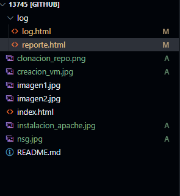

Resumen Final: hemos creado una VM instalado apache, configurados sus puertos luegode esto creamos un repositorio con la estructura solicitada y lo clonamos en la maquina Virtual
Estructura: Carpeta 13745-->log/Log.html reporte.html /13745--> imagenes, index.html
Habilitamos solo puerto 80 para visualizar la web porque es el puerto estándar del protocolo HTTP
en este trabajo aprendimos como manipular maquinas virtuales, hacer instalacion y configuracion de apache y como manejar el repositorio